별의 룬 모드 소개
별의 룬은 카드 게임 '슬레이 더 스파이어 2'에 별자리 룬 시스템을 더하는 모드입니다. 싸워서 별가루를 모으고, 그걸로 룬을 사서 카드에 새기고, 같은 별자리 룬을 모아 각성시키는 재미를 더합니다.
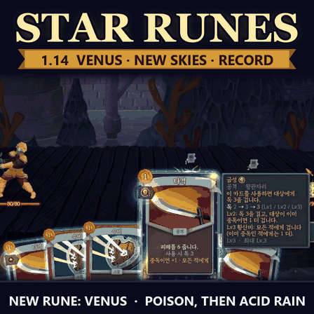
먼저, 슬레이 더 스파이어 2는 어떤 게임인가요
카드로 싸우며 탑을 오르는 게임입니다. 한 판은 1~2시간이고, 지면 처음부터 다시 시작합니다.
- 탑은 여러 막(층 묶음)으로 되어 있고, 각 막 끝에 보스가 있습니다.
- 지도에서 갈 길을 고릅니다: 일반 전투, 강한 적(엘리트), 물음표 방(이벤트), 휴식처, 상점, 보물.
- 전투는 턴제입니다. 매 턴 에너지 3으로 손에 든 카드를 냅니다. 공격 카드로 때리고, 방어 카드로 이번 턴 받을 피해를 막습니다.
- 적은 다음에 무엇을 할지 머리 위에 미리 보여 줍니다. 그걸 보고 공격할지 막을지 정합니다.
- 이기면 새 카드를 하나 골라 덱에 넣습니다. 덱이 점점 강해지는 것이 핵심 재미입니다.
- 아이언클래드, 사일런트 같은 캐릭터마다 쓰는 카드가 다릅니다.
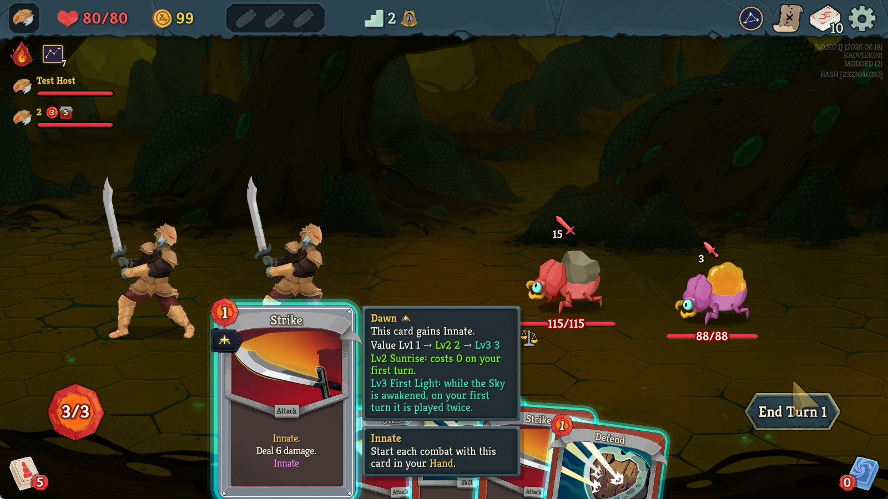
별의 룬이 더하는 것
기본 게임의 카드 싸움은 그대로 두고, 그 위에 '룬'을 모아 카드를 강하게 만드는 순환을 하나 더 얹습니다.
한 바퀴를 돌 때마다 덱이 강해지고, 같은 별자리 룬을 다섯 가지 모으면 그 별자리가 각성합니다.
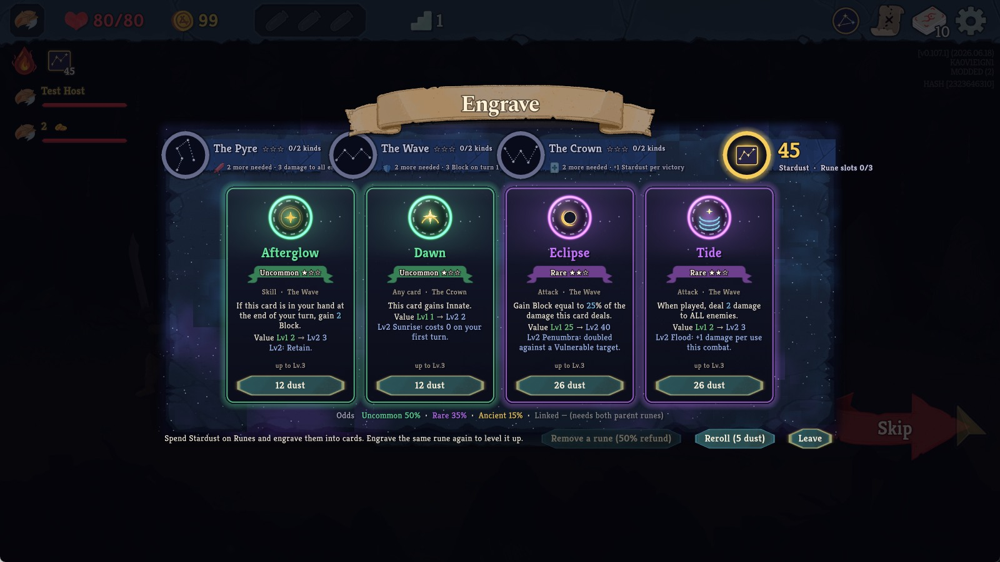
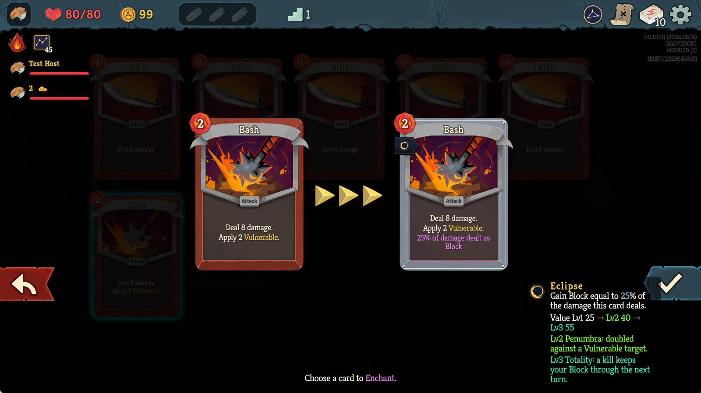
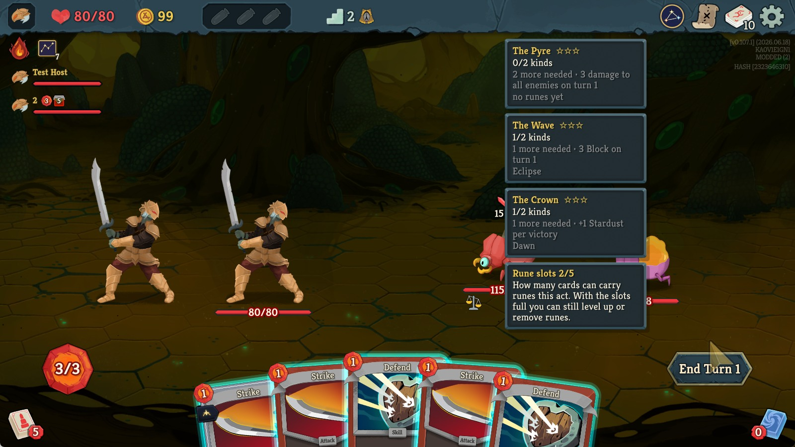
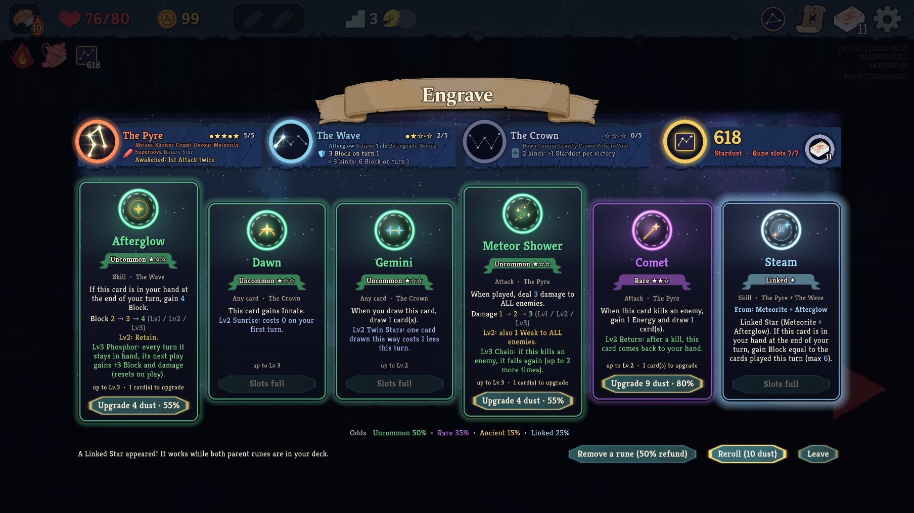
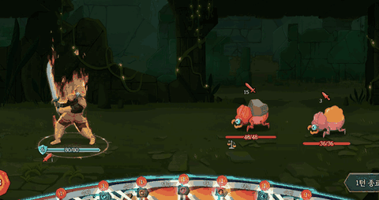
꼭 알아야 할 말들
| 말 | 뜻 | 비유 |
|---|---|---|
| 별가루 | 전투에서 이기면 받는 모드 전용 화폐 | 용돈 |
| 룬 | 카드에 붙이는 별 모양 능력. 예: 피해 추가, 방어도, 독 | 카드에 끼우는 보석 |
| 각인(새기기) | 산 룬을 내 덱의 카드 한 장에 붙이는 것 | 보석을 박기 |
| 별 상점·별의 제단 | 룬을 사는 곳. 보스를 잡은 뒤 열림 | 보석 가게 |
| 레벨 | 같은 룬을 키우면 Lv1 → Lv3까지 강해짐 | 강화 |
| 별자리(하우스) | 룬의 묶음. 불꽃·물결·하늘 세 가지 | 보석의 색깔 |
| 각성 | 같은 별자리 룬을 여러 개 모으면 켜지는 큰 효과 | 세트 효과 |
| 연성 룬 | 두 별자리의 룬을 함께 가졌을 때 새길 수 있는 합체 룬 | 조합 아이템 |
| 하늘 | 막을 시작할 때 세 가지 중 하나를 골라 그 막 전체에 거는 규칙 | 그날의 날씨 |
| 별자리표 | 첫 전투에서 받는 유물. 룬 시스템이 이걸로 켜짐 | 보석함 |
한 판은 이렇게 흘러갑니다
- 캐릭터를 골라 탑을 오르기 시작합니다. 1막의 하늘 세 개 중 하나를 고릅니다.
- 첫 전투에서 별자리표를 받고, 첫 선물로 룬 하나를 공짜로 골라 카드에 새깁니다.
- 싸울 때마다 별가루가 모입니다. 룬을 새긴 카드를 내면 룬 효과가 함께 발동합니다.
- 막 보스를 잡으면 별 상점이 열립니다. 모은 별가루로 룬을 사고, 어떤 카드에 새길지 정합니다.
- 같은 별자리 룬이 모일수록 별자리가 밝아지고, 충분히 모이면 각성합니다.
- 두 별자리의 룬을 함께 가지면 연성 룬을 노려 볼 수 있습니다.
- 마지막 보스까지 이기면 승리, 지면 처음부터 다시 합니다. 끝나면 '별자리 기록'에서 어떤 룬이 얼마나 활약했는지 봅니다.
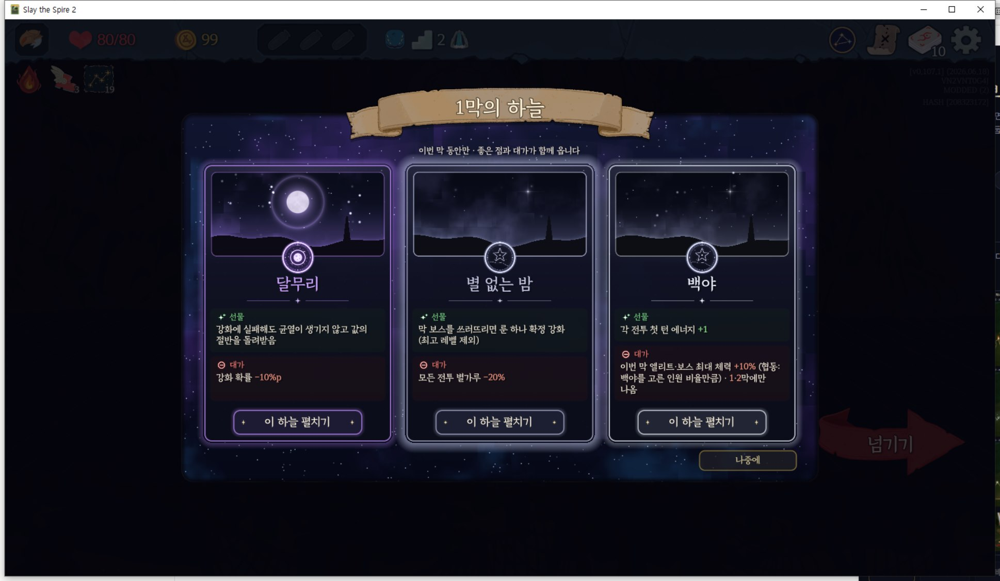
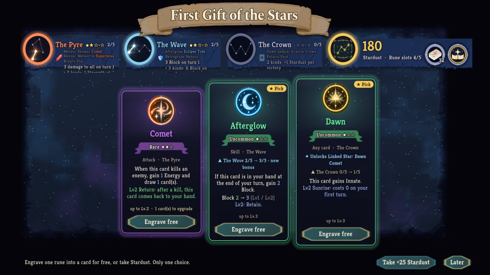
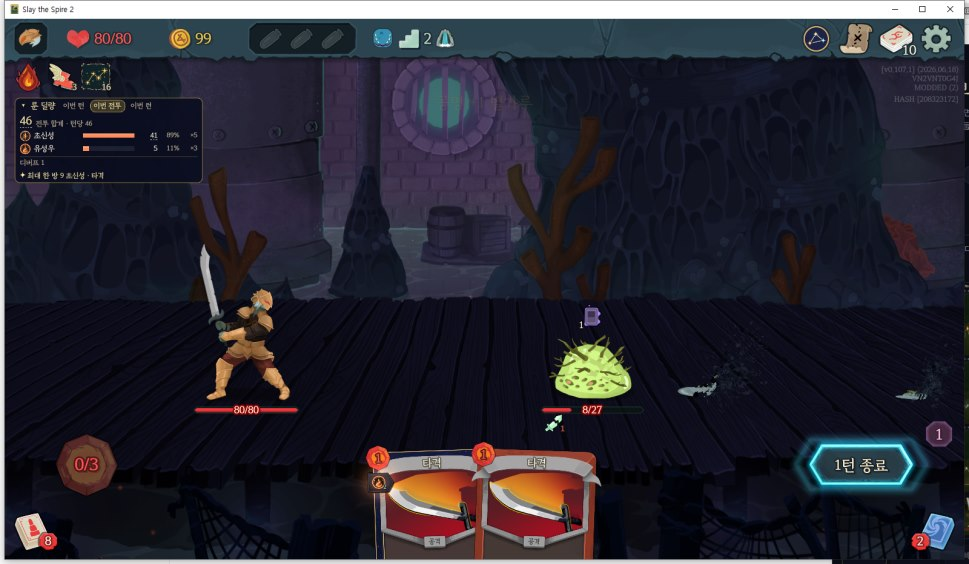
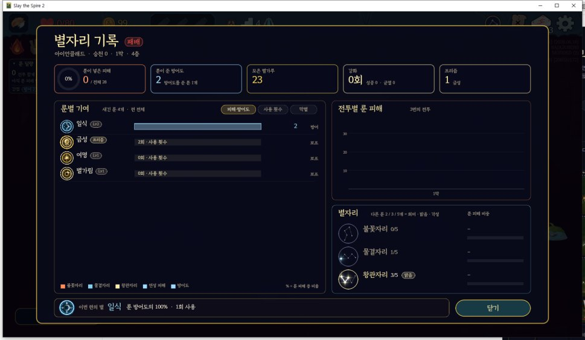
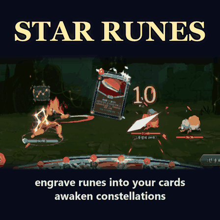
친구와 함께 하는 협동 모드에서도 쓸 수 있습니다. 두 사람이 같은 버전을 써야 합니다.
지금 모드 현황
최신 숫자는 통계 페이지에서 실시간으로 볼 수 있습니다. 최신 버전은 v1.14.0(2026년 10월 24일 배포)입니다.